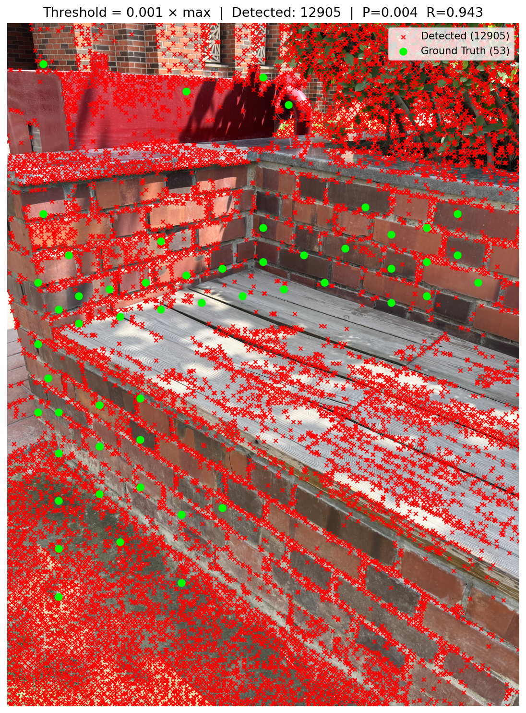
Threshold = 0.001
13,087 detections — 100% recall but flooded with false positives from foliage, wood grain, and ground textures.
Evaluating classical feature detection through Precision-Recall analysis and comparing temporal coherence in SIFT descriptors across consecutive vs random image pairs.
A brick bench/wall structure at Ashoka University was chosen for its abundance of
mortar T-junctions and structural edges. 60 corners were manually annotated using an
interactive plt.ginput tool — clicking directly on brick mortar joints, capstone edges, and
structural wall corners.
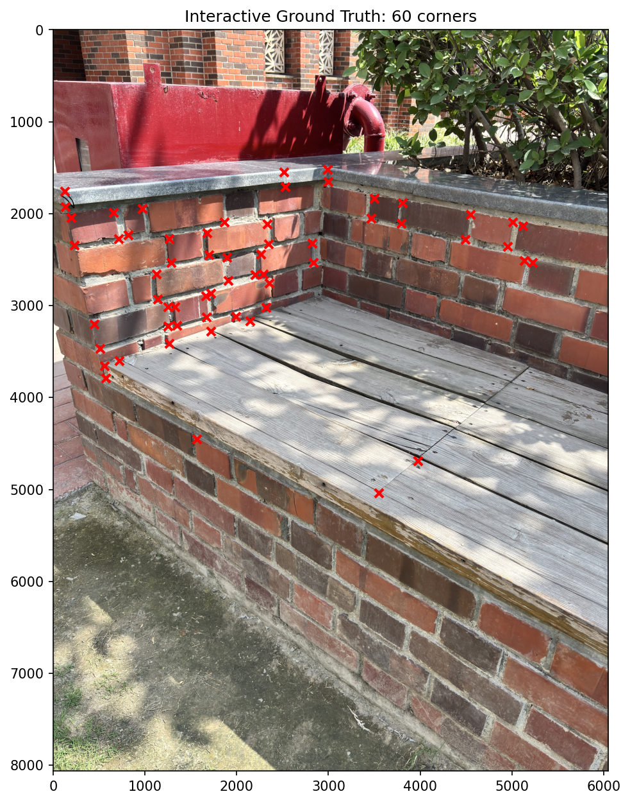
The cv2.cornerHarris function was applied with blockSize=2, ksize=3,
k=0.04. The response heatmap confirms strong activations at brick mortar joints and structural edges —
exactly the regions that were annotated.
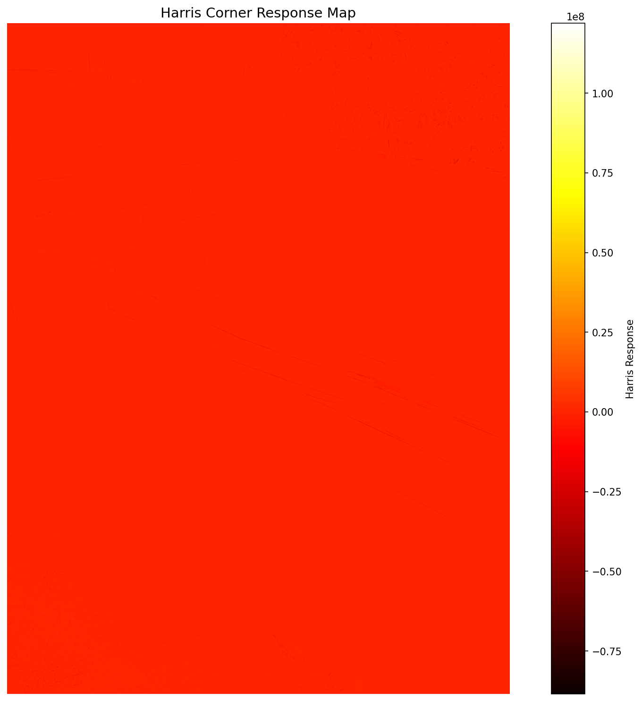
Grid-based NMS (grid=40px) was applied to suppress redundant detections. Using greedy 1-to-1 matching with a 120px distance threshold, the following results were obtained:
| Threshold | # Detected | Precision | Recall | F1 |
|---|---|---|---|---|
| 0.001 | 13,087 | 0.0046 | 1.0000 | 0.0091 |
| 0.005 | 7,269 | 0.0077 | 0.9333 | 0.0153 |
| 0.010 | 5,342 | 0.0092 | 0.8167 | 0.0181 |
| 0.020 | 3,844 | 0.0107 | 0.6833 | 0.0210 |
| 0.050 | 2,390 | 0.0130 | 0.5167 | 0.0253 |
| 0.100 | 1,398 | 0.0150 | 0.3500 | 0.0288 |
| 0.200 | 545 | 0.0073 | 0.0667 | 0.0132 |
| 0.300 | 219 | 0.0000 | 0.0000 | 0.0000 |
| 0.500 | 43 | 0.0000 | 0.0000 | 0.0000 |
| 0.800 | 10 | 0.0000 | 0.0000 | 0.0000 |

13,087 detections — 100% recall but flooded with false positives from foliage, wood grain, and ground textures.
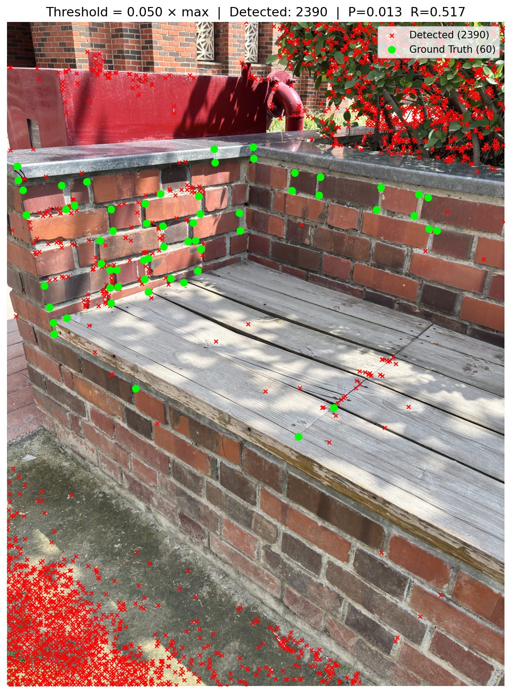
2,390 detections — 51.7% recall. Most brick wall corners are still detected, while ground noise is suppressed.
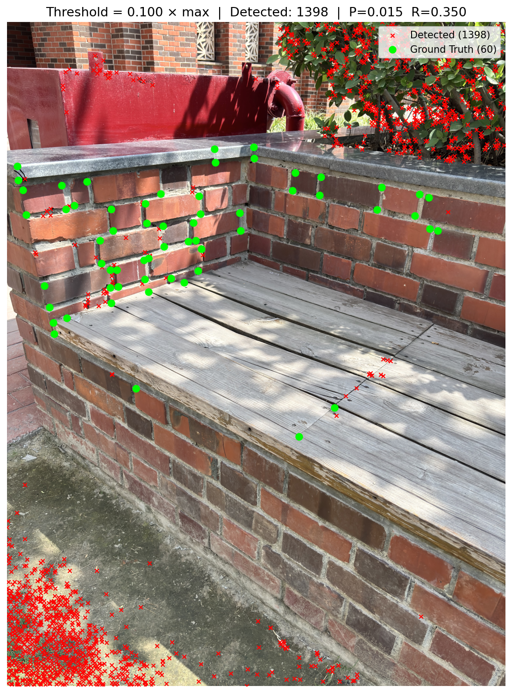
1,398 detections — 35% recall. Only strong mortar joints and capstone edges survive.
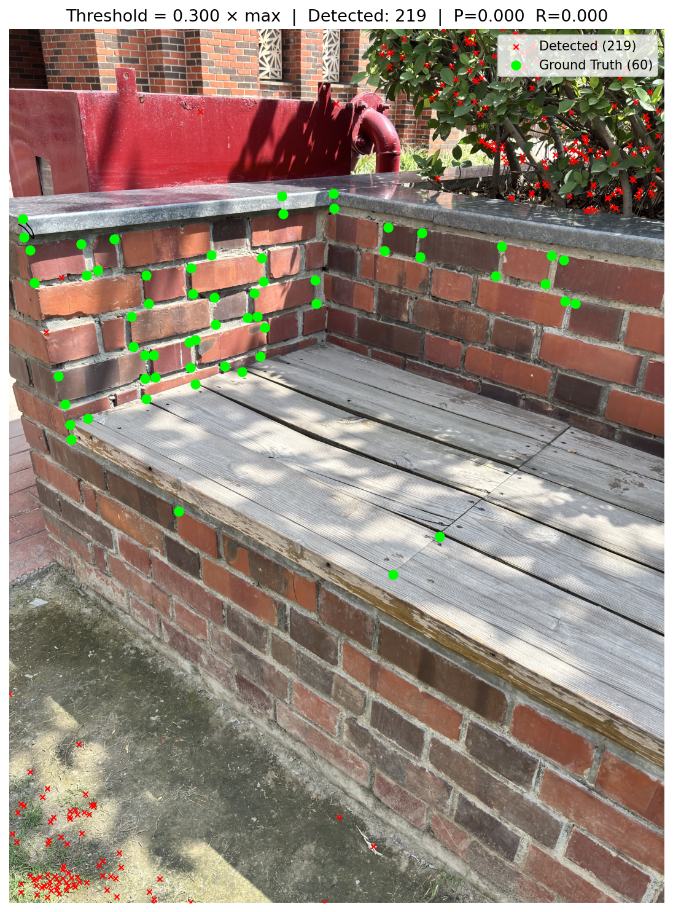
219 detections — 0% recall. Only the absolute strongest responses remain, none matching annotated GT.
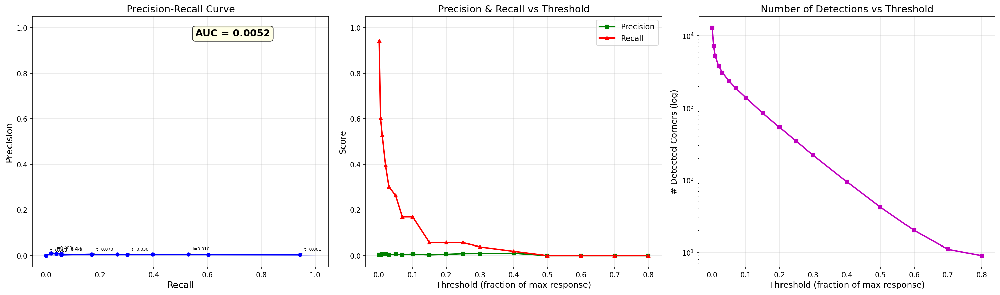
19 images of a mulch/garden soil stack (Miracle-Gro bags) captured with a camera orbiting the stack. SIFT keypoints (~10K–22K per image, 128-D descriptors) were extracted and matched using BFMatcher with Lowe's ratio test (threshold = 0.75).
Each image is matched against the next in the sequence (including the circular wrap-around pair oyla_0037 → oyla_0001).
| Pair | # Matches | Total Cost |
|---|---|---|
| (oyla_0001, oyla_0003) | 6,230 | 887,318 |
| (oyla_0003, oyla_0005) | 6,707 | 902,713 |
| (oyla_0005, oyla_0007) | 6,219 | 925,140 |
| (oyla_0007, oyla_0009) | 5,067 | 788,913 |
| (oyla_0009, oyla_0011) | 8,456 | 1,188,293 |
| (oyla_0013, oyla_0015) | 12,115 | 960,387 |
| (oyla_0025, oyla_0027) | 1,851 | 298,157 |
| (oyla_0035, oyla_0037) | 608 | 102,544 |
| (oyla_0037, oyla_0001) ← wrap | 51 | 9,000 |
| TOTAL / AVERAGE | 73,923 / 3,891 | 10,283,238 / 541,223 |
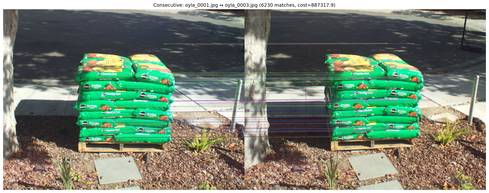
6,230 good matches. Dense horizontal match lines confirm high visual overlap between temporally adjacent frames.
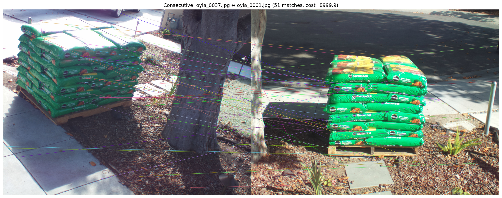
Only 51 matches — camera has orbited nearly 360° so these frames see opposite sides of the stack.
| Pair | # Matches | Total Cost |
|---|---|---|
| (oyla_0029, oyla_0035) | 188 | 28,883 |
| (oyla_0003, oyla_0025) | 121 | 21,966 |
| (oyla_0001, oyla_0015) | 157 | 28,442 |
| (oyla_0005, oyla_0007)* | 6,219 | 925,140 |
| (oyla_0003, oyla_0021) | 53 | 9,570 |
| (oyla_0001, oyla_0019) | 76 | 13,017 |
| TOTAL / AVERAGE | 8,660 / 456 | 1,349,139 / 71,007 |
*Random selection coincidentally picked consecutive pair (0005, 0007), inflating the average.
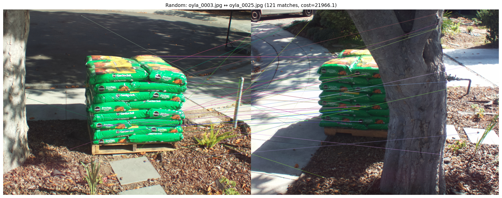
Only 121 matches. Wild crossing lines reflect poor geometric consistency from vastly different viewpoints.
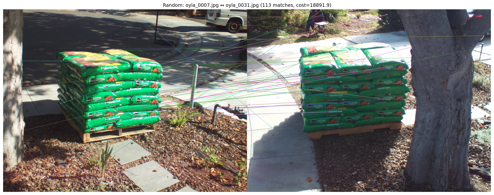
113 matches — only globally distinctive features (logos, tree trunk) bridge the large viewpoint gap.
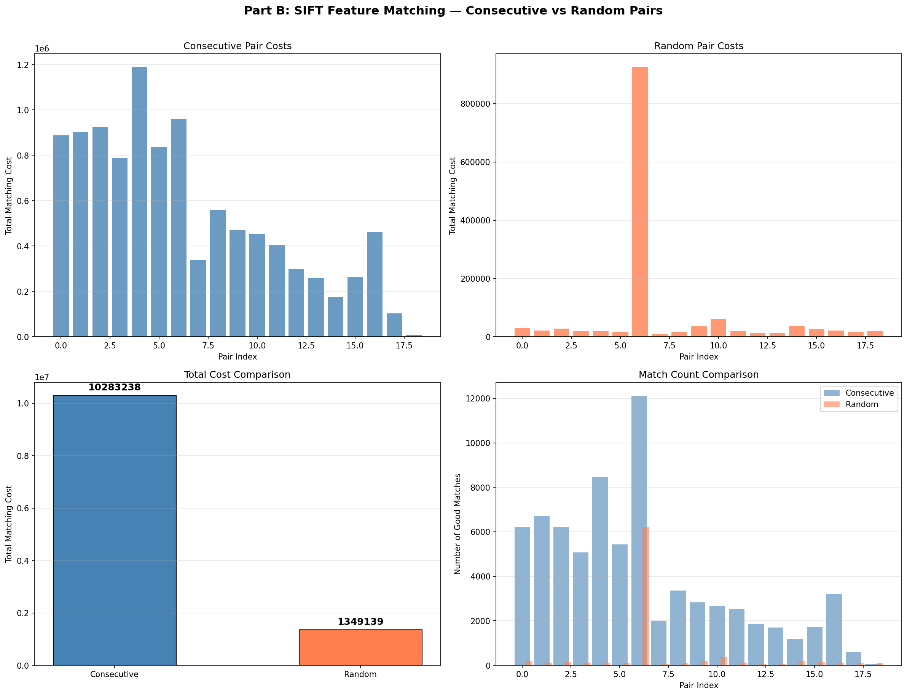